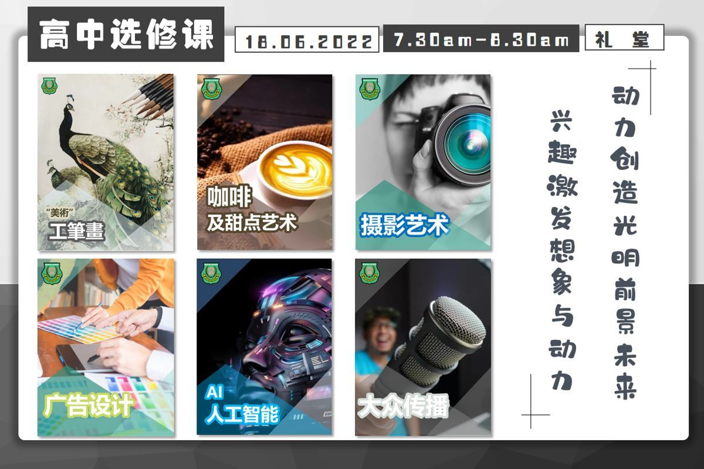
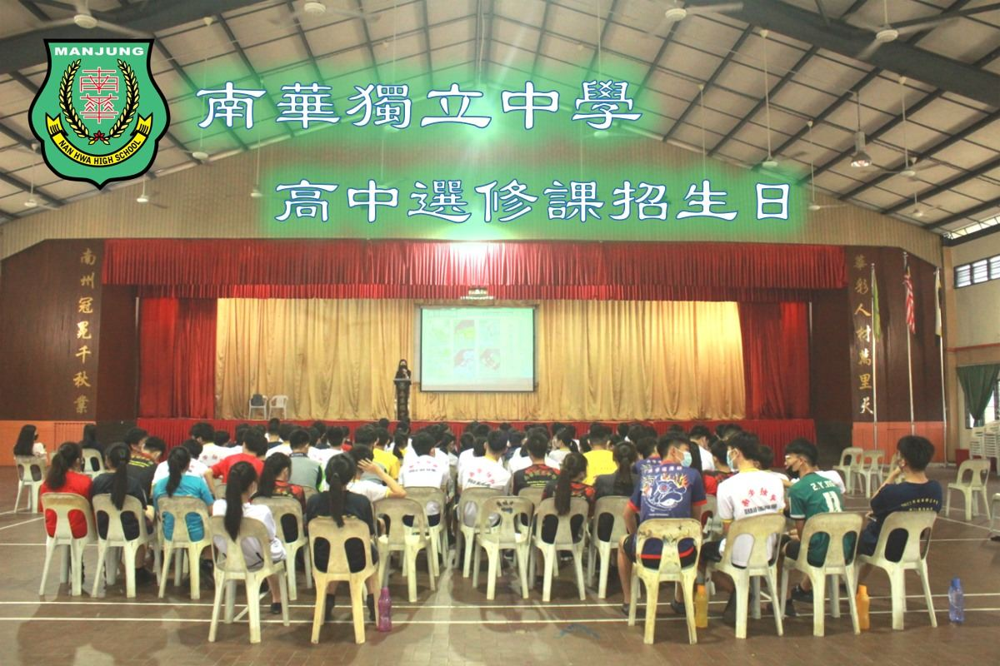
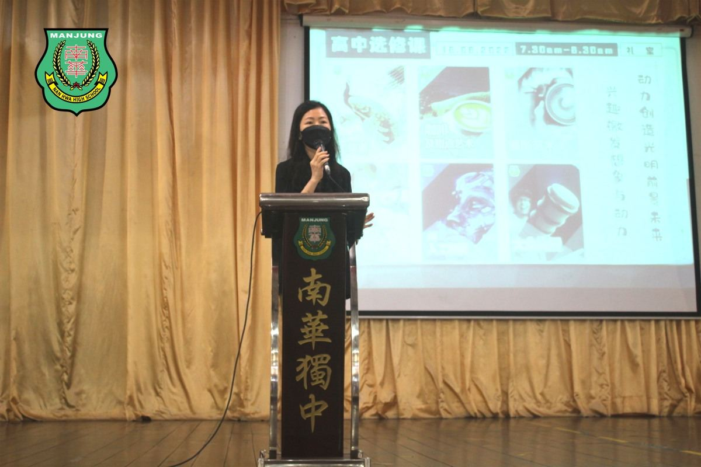
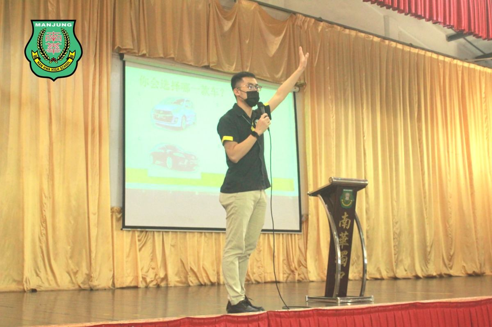
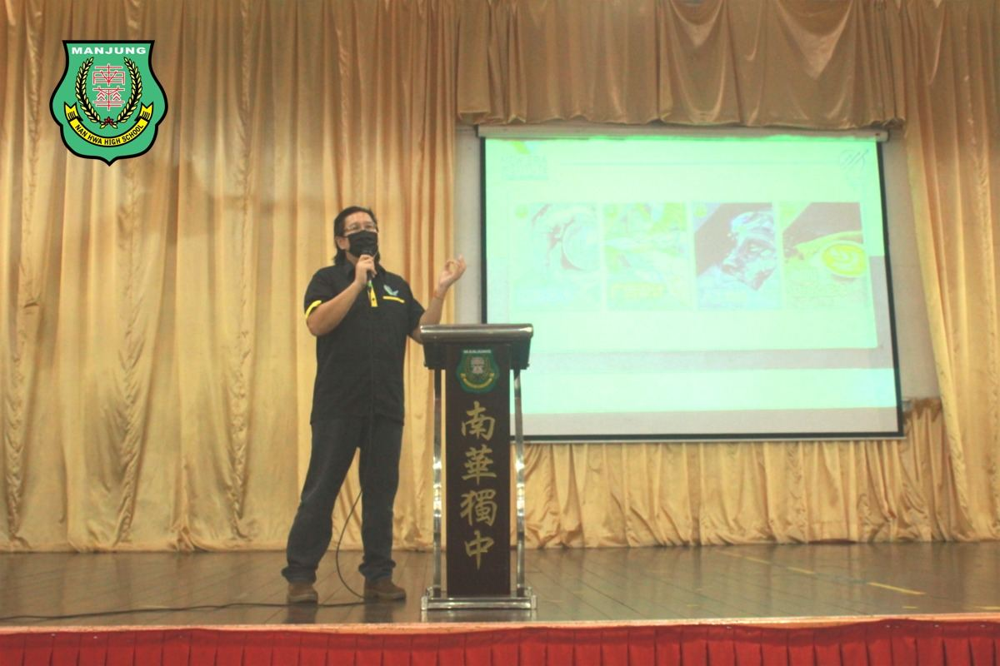
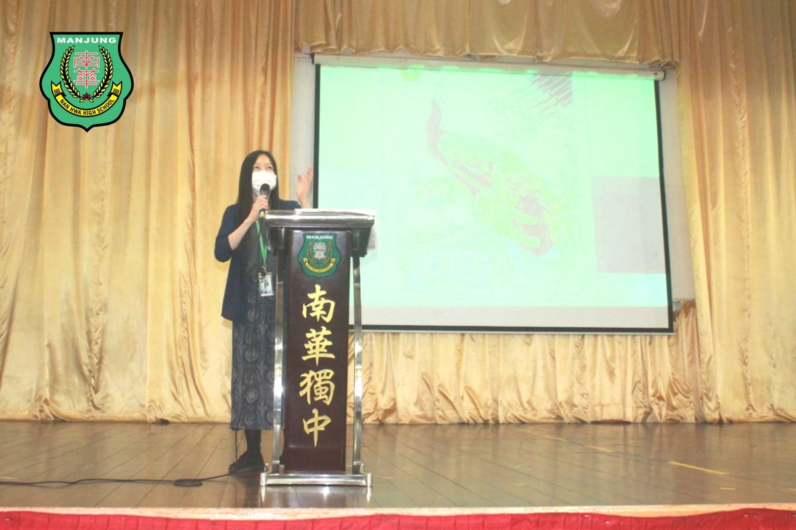
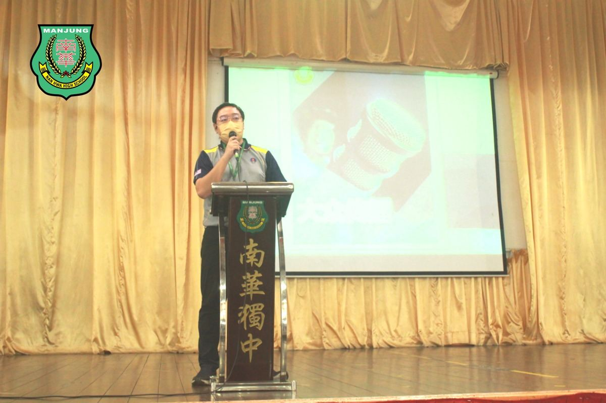
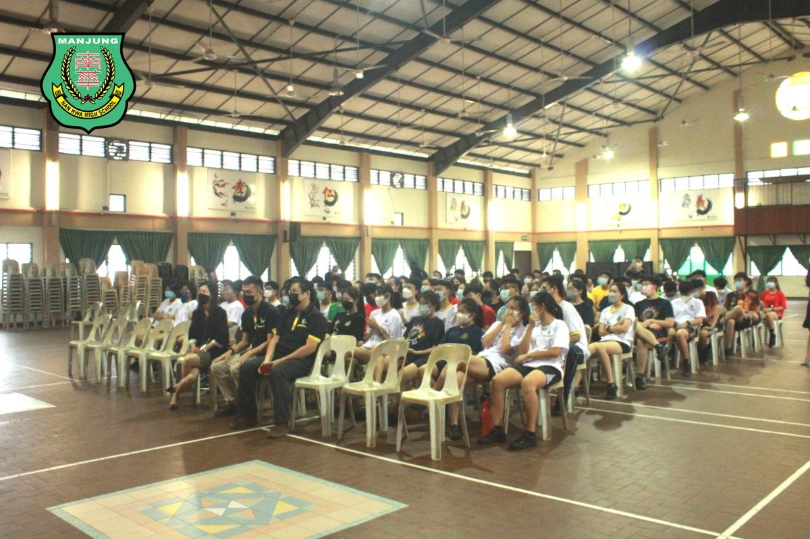

👩💼高中选修课招生日🎓
👩💼高中选修课招生日🎓
「兴趣是最好的老师。」——伟大科学家爱因斯坦。
本校为即将开展的“高中选修课”举办招生日，特此邀请新纪元技职与推广教育学院李英伦主任、曽伟勤主任及本校选修课老师为高中的学生介绍选修课课程内容。
此次共开设六门选修课供高中生选择，分别有：咖啡与甜点艺术、摄影艺术、广告设计、AI人工智能、大众传播和“艺术”工笔画，前四门课程更是有幸与新纪元技职学院合作，引进新纪元技职学院相关课程的技术支援及教学设计，透过实作式教学引发学生兴趣、培育学生一技之长，提高竞争优势。
#高中选修课 #新纪元技职与推广教育学院
#咖啡与甜点艺术 #摄影艺术 #广告设计
#AI人工智能 #大众传播 #艺术工笔画
#南华独中 #曼绒 #实兆远







